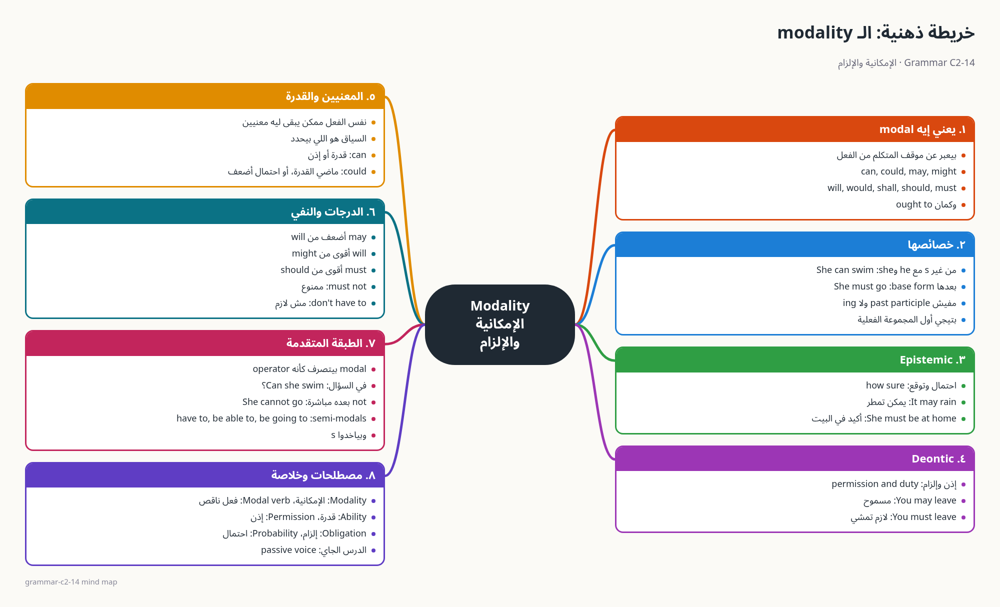

🦉
آداب اللغة الإنجليزية
⭐
0
🔥
استمر!
🧭
كورس 2، المجموعة الفعلية 4: الـ modality
📊
المستوى: من الصفر
كورس ٢ درس ١٤
⏰
القواعد الأكاديمية
📄 حمّل PDF الدرس
📝 ملخص الدرس (عربي) PDF
📝 Lesson Summary (English) PDF
🧠 الخريطة الذهنية PDF
🧠 شوف الخريطة الذهنية للدرس

→
الدرس اللي قبله
كل دروس الكورس
الدرس اللي بعده
←